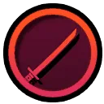
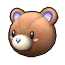

Samurai
Lutador
Guerreiros errantes capazes de vencer uma batalha com um único golpe de espada.
Atributos
Ataque (100)
0
Defesa (100)
0
Vida (100)
0
Hypermax: o build mais forte
27º de 42 classes no ranking Hypermax
Poder no placar
683.137
Poder no perfil
546.510
Ataque
22.258
Defesa
126.740
Vida
28.945
Crítico
5%
Dano crítico
×5
Elemento
185
Braços de Almirante de Titã T15
Runa: Elemento Turbilhão · Espírito: Espírito de Titã
Armadura do BIT.Runner T15
Runa: Elemento Turbilhão · Espírito: Espírito de Titã
Poder do Rei Amaldiçoado T15
Runa: Elemento Oblívio · Espírito: Espírito de Titã

Cabeça de Ursinho de Pelúcia T15
Runa: Elemento Turbilhão · Espírito: Espírito de Titã
Pés de Ursinho de Pelúcia T15
Runa: Elemento Turbilhão · Espírito: Espírito de Titã
Copa Kappa T16
Runa: Elemento Turbilhão · Espírito: Espírito de Titã
Habilidades: Grão-mestre Iaido T4, À Prova de Balas T4, Além do Imortal T4, Marca Premium T4, Pele de Titã T4
Calculado só com os dados do jogo: qualidade Lendária, Forjado nas Estrelas, Ascensão e Transcendência, nível 50.